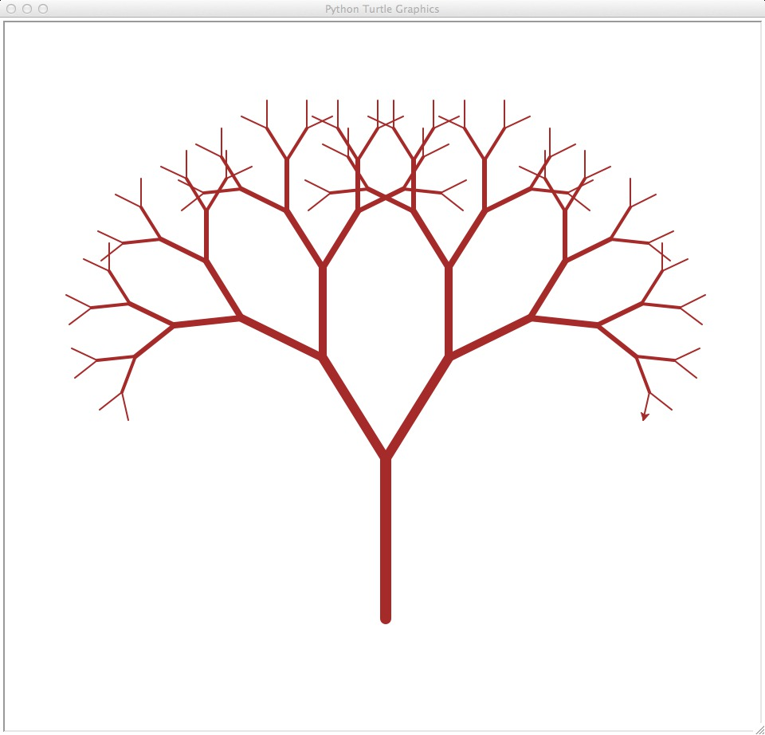
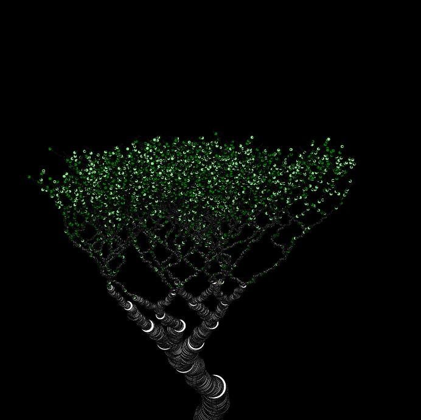
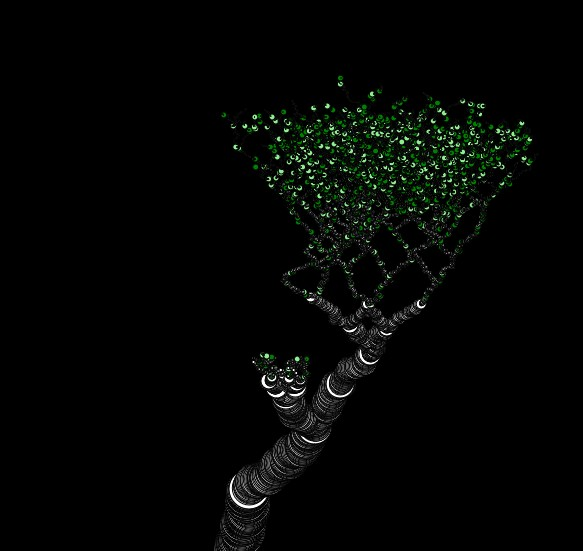
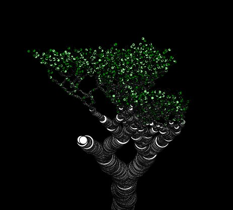
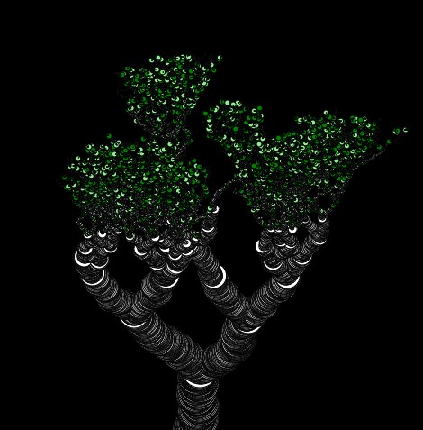
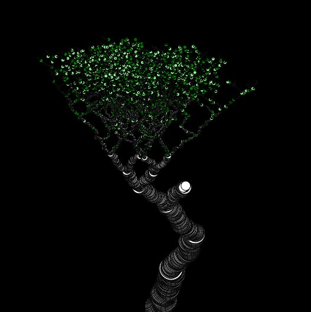
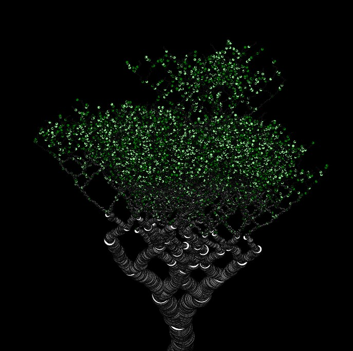
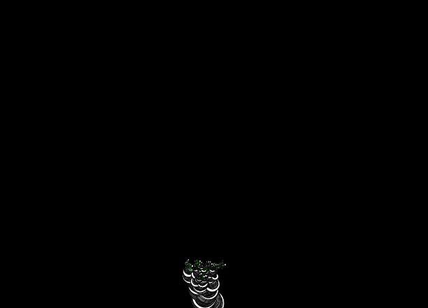

Визуализация естественных бинарных деревьев
Существует множество скриптов построения бинарных деревьев. Мы любим бинарные деревья.
Они являются классическим введением в рекурсию в программировании, обладая уникальной способностью решать проблемы.
Когда дело доходит до визуализации бинарных деревьев, простая схема подойдет для образовательных целей.
Но что насчет других целей?
Когда я искал в Google бинарные деревья, я нашел что-то вроде этого:

Когда вы посмотрите на некоторые деревья, которые действительно были сгенерированы с помощью кода, вы можете найти что-то вроде этого:
Выглядит круто, но оно такое прямое и неестественное. Ему не хватает характерных черт настоящего дерева. Я хочу, чтобы бинарное дерево выглядело как настоящее дерево. Я искал в интернете бинарные деревья, похожие на настоящие... Практически не было бинарных деревьев, которые выглядели бы как настоящие деревья. Какое разочарование.
Я захотел исправить это, поэтому я добавил больше random() в генерацию + немного цветов. В общих чертах, я создал алгоритм, который рекурсивно рисует круги, поднимаясь вверх, слегка изменяя направления и уменьшаясь со временем. Чтобы добавить больше непредсказуемости, я добавил вероятность того, что ветка разделится после определенной длины. Также, после того как текущая ветка достигнет определенной длины, существует вероятность, что на ней вырастет лист. Вот результат:
     Некоторые получаются лучше, некоторые хуже. В общем, я очень доволен тем, как получился генератор. Потребовалось время, чтобы найти оптимальные настройки.
Время от времени получается пень ~

Я выложил полный код на GitHub. Код на GitHub имеет пользовательский интерфейс с различными настройками, с которыми можно поиграть.
Кстати, наблюдение за ростом листьев очень завораживает.